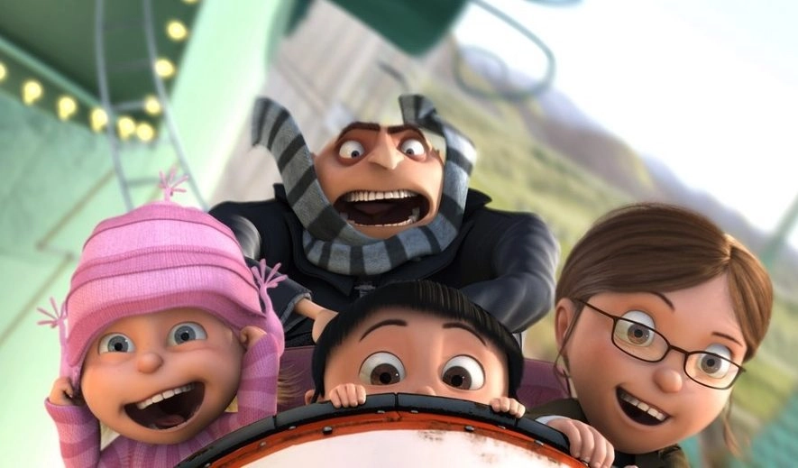

Quem Somos
Em Meu Malvado Favorito, o supervilão Gru tem seu posto de maior ladrão do mundo
ameaçado quando um rival rouba a Pirâmide de Gizé.
Para recuperar seu prestígio, ele planeja o maior assalto da história: roubar a Lua.
O plano toma um rumo inesperado quando ele adota três órfãs.
